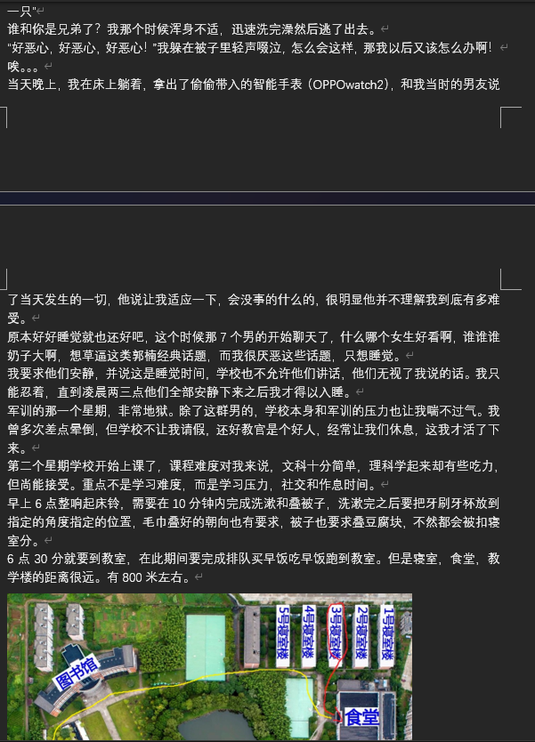
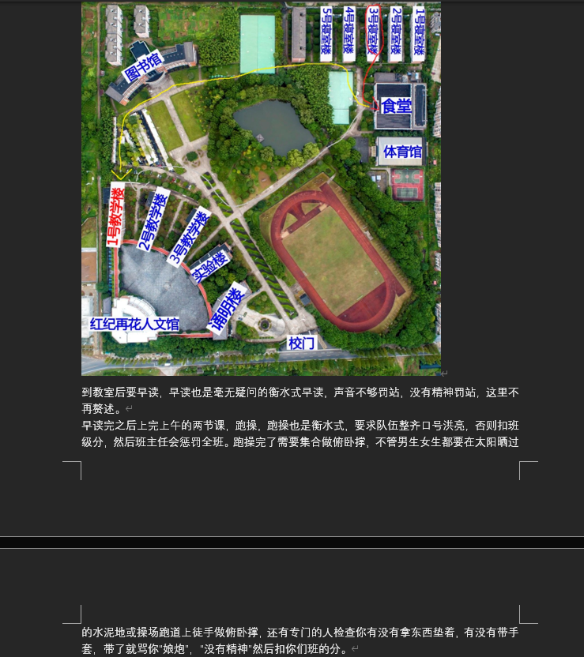
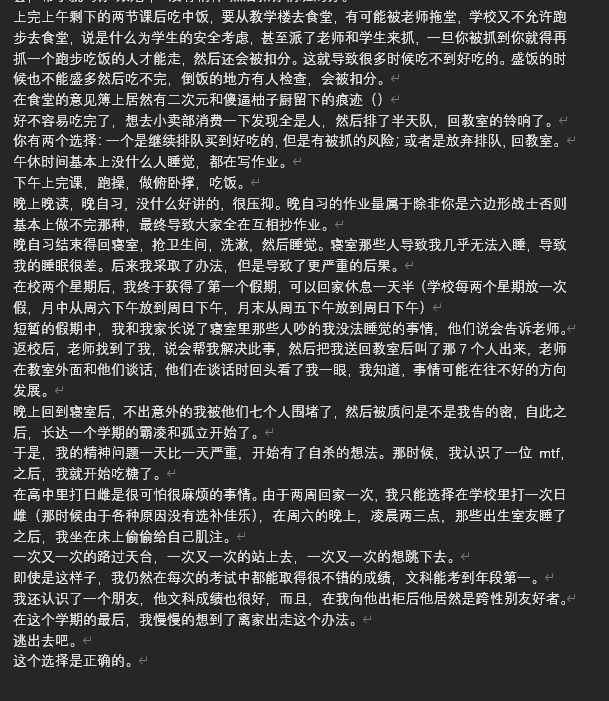

@SakurabaEma_ITN 所以精神本来就不正常反而还保护了我，他们只敢孤立我而不敢动我或者动我东西，因为他们不知道下一秒我会从书包里掏出什么绝对符合所有相关规定但是就是可以要他们命的东西捅向他们





2023年，我考上老家重点高中，却走进了一辈子的噩梦
8人寝室，16人共用洗浴间，双向窗，被全寝室霸凌，向老师求助反遭围堵霸凌
凌晨两三点才能入睡，无数次站上天台
但文科成绩还是年段第一，还遇到了第一个友好的人
后来我逃出去了 但是给我留下了永久的伤害 https://t.co/fPTW1ookbH https://t.co/jdf2Aga02R
8人寝室，16人共用洗浴间，双向窗，被全寝室霸凌，向老师求助反遭围堵霸凌
凌晨两三点才能入睡，无数次站上天台
但文科成绩还是年段第一，还遇到了第一个友好的人
后来我逃出去了 但是给我留下了永久的伤害 https://t.co/fPTW1ookbH https://t.co/jdf2Aga02R